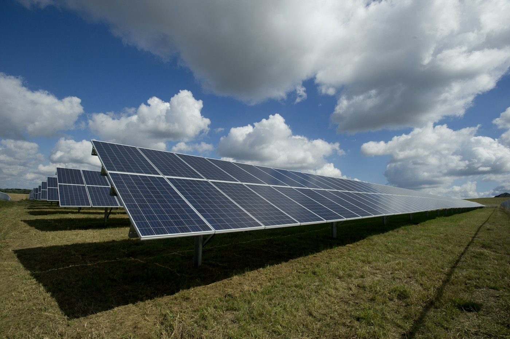
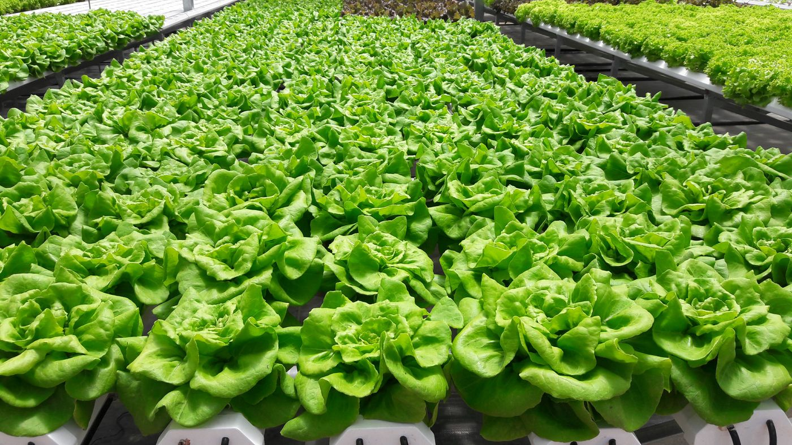
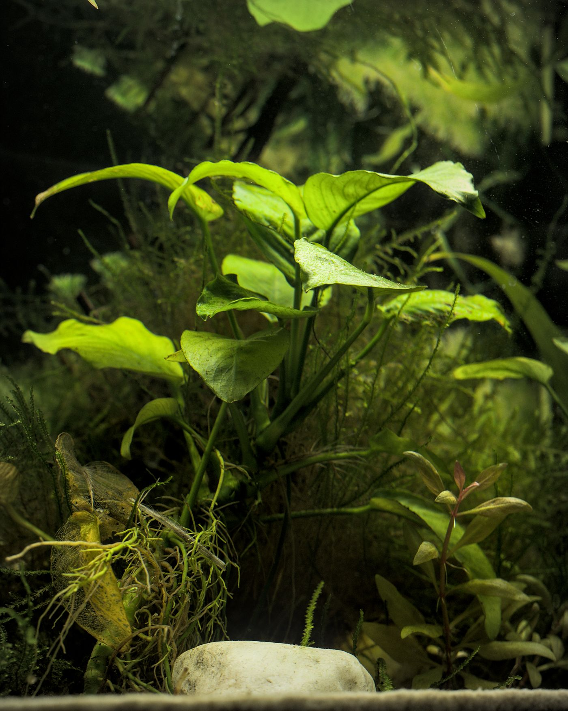
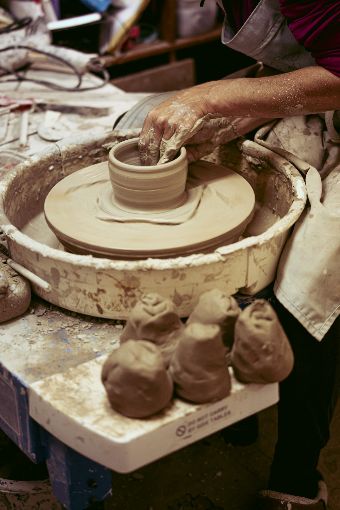

Five threads, plenty of possibilities
Things worth
getting curious about.
From new software tools to tiny living systems, with faith woven through everyday life. A collection of interests with plenty of room to evolve.
Software in an AI era
Exploring how we build, think, and stay curious as software changes.

A little more sun-powered
An open notebook for DIY solar, small systems, and learning by making.

Roots, water, repeat
A space for hydroponic experiments and the quiet satisfaction of watching things grow.

Small worlds, underwater
Exploring the balance of plants, water, light, and a little patience.

Still on the Potter’s Wheel
A life of faith, still being shaped by grace.
Mockup: topic descriptions are placeholders; photography is illustrative.